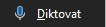
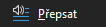
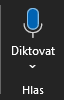
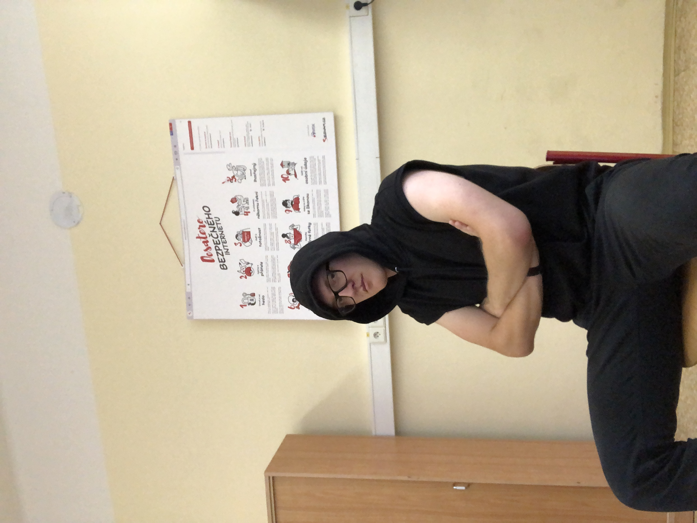

Diktování umožňuje používat převod řeči na text k vytváření obsahu v Microsoftu 365 s mikrofonem a spolehlivým připojením k internetu. Je to rychlý a snadný způsob, jak zapsat vaše nápady, jak vytvářet koncepty nebo osnovy a zaznamenávat poznámky.

Funkce přepisu převádí řeč na textový přepis, přičemž každý reproduktor je samostatně oddělený. Po konverzaci, rozhovoru nebo schůzce se můžete vrátit k částem záznamu tak, že přehrajete zvuk s časovým razítkem a upravíte přepis, abyste provedli opravy. Celý přepis můžete uložit jako wordový dokument nebo vložit jeho fragmenty do existujících dokumentů.
Microsoft se vydal směrem pro své uživatele, kteří mají problémy s psaním. Díky tomuto nástroji mohou uživatelé diktovat a přepisovat text. Tento nástroj je velmi užitečný pro lidi, kteří mají problémy s psaním, nebo pro lidi, kteří mají problémy s psaním rukou.
|  | 8:00-8:45 | 8:55-9:40 | 9:55 - 10:40 | 10:45 - 11:30 | 12:05 - 12:50 | 12:55 - 13:40 | 13:45 - 14:30 |
|---|---|---|---|---|---|---|---|
| Pondělí | Programovaní | Dějepis | Anglický jazyk | Matematika | Tělocvik | x | |
| Úterý | Počítačové sítě | Český jazyk | Německý jazyk | Ekonomika | Matematika | Anglický jazyk | Český jazyk |
| Středa | Aplikace na PC | Fyzika | Operační systémy | x | x | ||
| Čtvrtek | Učetnictví | Český jazyk | Ekonomika | Učetnictví | Anglický jazyk | x | |
| Pátek | Matematika | Německý jazyk | Písemná a Elektronická komunikace | Angličtina | Elektronická komunikace | ||